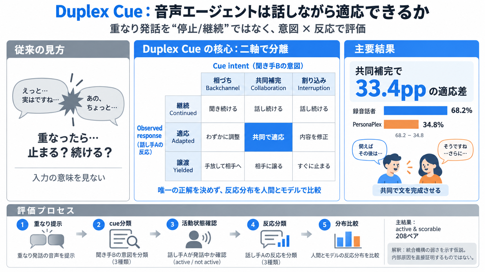

意図ラベル
Cue intent聞き手の短い発話が、支持、共同作業、発話権の取得のどれを目的としていたかを区別する。

Duplex conversation
フルデュープレックス音声対話を、単なる「停止か継続か」ではなく、聞き手の意図と話し手の反応の組み合わせとして測るベンチマーク。
Old metric
発話の重なりには、相づち、共同補完、割り込みという異なる意図がある。すべてを一括りにすると、エージェントの適応行動が見えなくなる。
Conventional view
重なったら
止まったか
入力の意味を問わず、話者の停止と継続だけを数える。
Duplex Cue view
何を伝えられ、
どう応じたか
聞き手のcue意図と、話し手の観測反応を別々にラベル化する。
Core idea
同じ重なり発話でも、適切な反応はcueの意図によって変わる。そこで「入力の意図」と「出力の行動」を独立した二軸で観測する。
Backchannel、Collaboration、Interruptionのどれとして機能したか。
Continued、Adapted、Yieldedのどの行動が現れたか。
Two labels
cueラベルは「Bは何をしようとしたか」、反応ラベルは「Aに何が起きたか」を表す。一方を他方から自動的に決めないことが重要になる。
聞き手の短い発話が、支持、共同作業、発話権の取得のどれを目的としていたかを区別する。
話し手が続けたか、内容を取り込んだか、発話権を譲ったかを、実際の挙動から記録する。
Listener intent
表面的にはすべて「相手の発話中に入る声」だが、会話上の役割は異なる。意図の分類が、評価の出発点になる。
「うん」「なるほど」など、話を聞いていることを示す支持的なcue。通常はターン取得を求めない。
訂正、補足、候補提示、未完文の完成など、進行中の内容を一緒に組み立てるcue。
現在の流れを止める、話題を変える、または自分が発話権を取ろうとするcue。
Speaker behavior
沈黙したかどうかだけでは、cueを理解して反映した行動を捉えられない。Adaptedを独立させることで、ターン内の適応が見える。
cueによる明確な変更を示さず、進行中の発話をそのまま続ける。
cueを認める、取り込む、言い換えるなど、ターンの内容や表現を局所的に更新する。
発話を止め、聞き手側に会話のターンを渡したと観測される。
Three by three
各cueに唯一の正解セルがあるわけではない。人間とモデルが、同じ条件でどの反応をどの比率で選ぶかを比較する。
Scoring process
評価は、cueと応答を抽出して別々に分類し、条件を満たしたペアだけで反応分布を比較する。生成失敗やスコア不能例の扱いも結果を左右する。
進行中のSpeaker Aに、Speaker Bの短い音声cueが重なる。
Backchannel、Collaboration、Interruptionに分ける。
話者が実際に活動しており、評価条件が成立したかを見る。
Continued、Adapted、Yieldedの観測ラベルを付ける。
録音話者とPersonaPlexの行動比率をcue別に比較する。
Conditional sample
公開された比較は、活動状態とスコア可能性の条件を満たしたペアに基づく。したがって、全候補や実運用全体を無条件に代表する値ではない。
録音された話者の反応と、会話継続モデルPersonaPlexの反応を比較。
同一のcue意図に対し、各話者がどの応答カテゴリを示したかを集計。
測定値は「評価可能な条件下で観測された行動率」として解釈する。
Collaboration gap
Collaboration cueに対するターン内適応は、録音話者68.2%、PersonaPlex 34.8%。この差が研究の最も明確なシグナルである。
共同cueをターン内で認め、内容や表現に反映。
同じカテゴリのcueに対し、適応として観測される割合が低い。
Why it matters
共同補完では、聞き手の入力を理解し、現在の発話計画へ即時反映する必要がある。結果は、モデルのターン内コンテキスト更新が弱い可能性を示す。
補足、訂正、候補提示などを、単なる雑音や割り込みと区別する。
生成中の内容を局所的に更新し、相手の貢献が見える形で反映する。
必要以上に停止せず、共同で作られた内容としてターンを完成させる。
Shared behavior
Backchannel cueに対しては、録音話者とPersonaPlexの双方でContinuedが約70%台を占める。支持的な短い入力を受け流して話し続ける挙動は、比較的近い。
聞き手の「聞いている」という合図を受けても、ターンを不必要に止めずに継続する。
録音話者と同様に継続が優勢で、相づち処理には大きな隔たりが見えにくい。
Different policy
PersonaPlexはYieldedが50.8%で、録音話者の39.3%を上回る。一方、Adaptedは録音話者45.9%、PersonaPlex 32.8%だった。
Pattern summary
PersonaPlexはすべての重なりに同じ反応をしているわけではない。相づちでは人間に近い一方、共同補完と割り込みで行動配分が異なる。
Local behavior
Adaptedは、cueを認める・取り込む局所的な対話行動の観測である。事実性、説得性、談話全体の一貫性までは直接評価しない。
Measures
聞き手のcueに応じて、話し手の内容、言い回し、進行が局所的に変化したかを捉える。
Does not measure
取り込んだ情報が正しいか、会話全体を改善したか、最終回答の品質が高いかは別の指標が必要になる。
Denominator matters
activityとscorableのフィルタは、比較可能性を高める一方で、難しい失敗例を分析対象から外す可能性がある。除外ルールの透明性が性能解釈を左右する。
初期総数は提供資料では未提示。
話者活動が評価条件を満たす例。
反応カテゴリを判定できる例。
最終分析対象
Generalization limits
評価は英語の条件付きケーススタディであり、完全な双方向相互作用でもない。言語、参加者、測定方法が変われば、行動比率も変わり得る。
相づちや割り込みの慣習は言語・文化で異なり、日本語へ自動的に一般化できない。
録音の聞き手は生成話者の反応を聞いて、次の行動を変えることができない。
反復参加や非代表的な構成がある場合、一般利用者の会話分布と一致しない。
自動処理、活動検出、ラベル判断の独立性や精度により集計値が変動し得る。
Evidence roadmap
Duplex Cueは局所行動を高解像度で測る土台になる。能力の結論を強めるには、相互作用、言語差、内容品質、不確実性を追加で評価する必要がある。
生成話者の反応を聞き、相手も次のcueや発話方針を変えられる環境にする。
日本語を含む複数言語で、相づち頻度やターン交替規範の違いを測る。
事実性、課題達成、談話一貫性とAdaptedラベルを組み合わせる。
信頼区間、アノテータ一致度、除外条件別の感度分析を報告する。
From metric to model
製品開発では、重なりを一律に停止トリガーとして扱うのではなく、意図検出、ターン内統合、方針制御を分けて改善できる。
相づち、訂正、補完、明示的な停止要求を音声と文脈から区別する。
発話中でも聞き手入力をコンテキストへ反映し、計画を局所修正する。
継続、短い確認、適応、譲渡を、cue意図とリスクに応じて選ぶ。
平均停止率ではなく、cue別の3カテゴリ分布とタスク品質を追跡する。
Operational safeguards
音声データは個人同定、なりすまし、声の複製に直結する。評価精度だけでなく、データ利用、除外処理、アクセス制御を運用ルールとして固定すべきである。
収集目的、再利用範囲、保存期間、第三者提供の条件を明文化する。
個人同定や声の複製を抑えるアクセス制御と技術的ガードレールを設ける。
生成失敗、活動検出、スコア不能の理由と件数を追跡可能にする。
人手検証、独立評価、一致度確認により、測定誤差と恣意性を抑える。
Final takeaway
Duplex Cueの価値は、聞き手の意図と話し手の反応を分離したことにある。現時点の主な仮説は、PersonaPlexが共同補完をターン内へ取り込む能力に改善余地を持つということだ。
相づちでは、両者とも継続が優勢。
共同補完では、適応率に33.4ppの差。
結論は208ペアの条件付き評価として扱う。
No references found